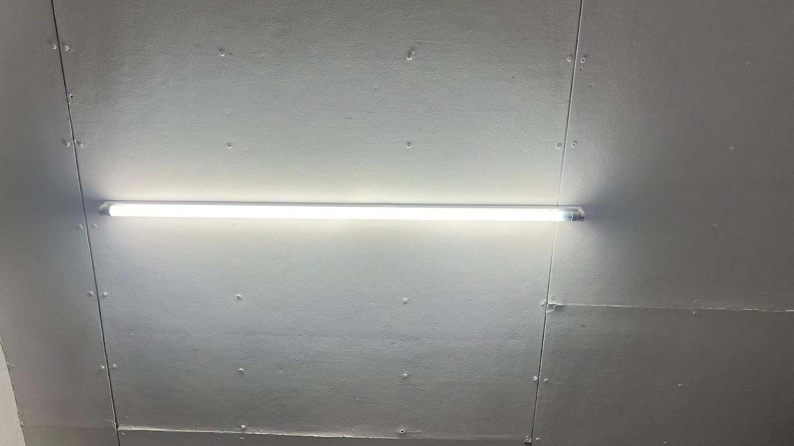
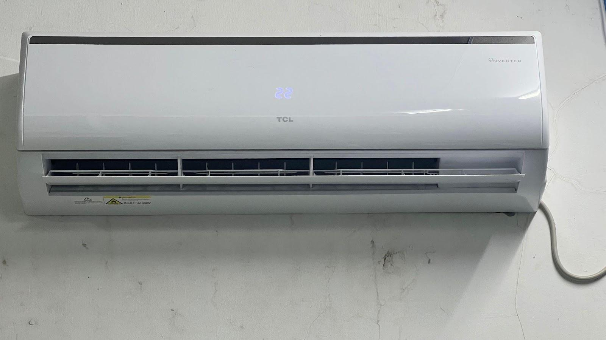
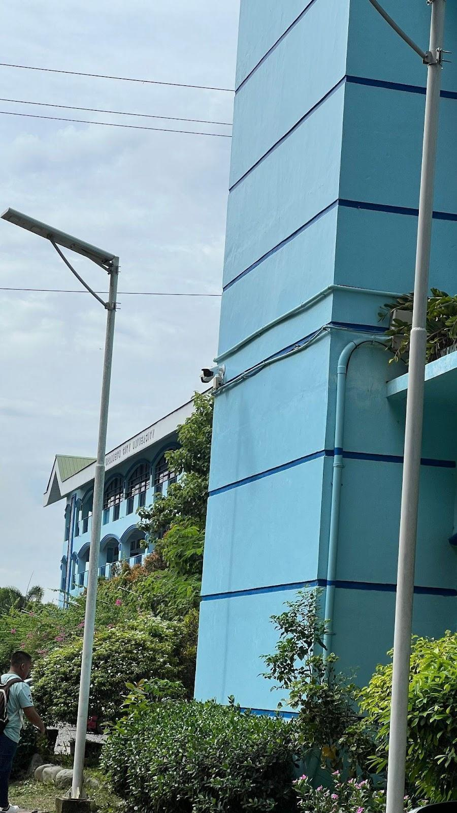
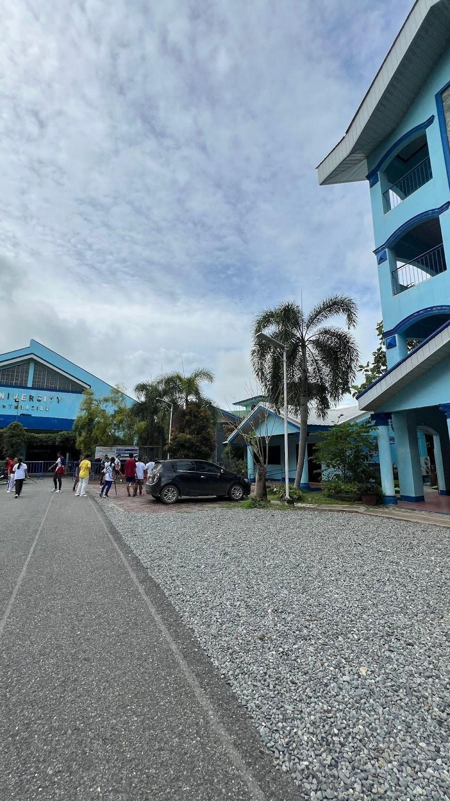
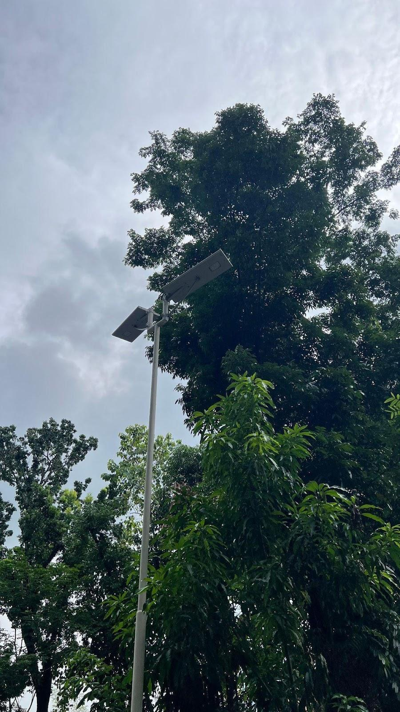
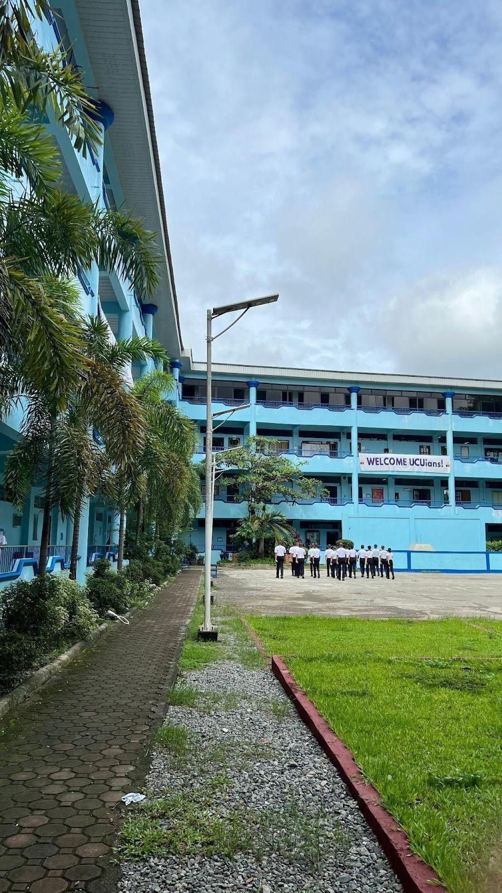

| LED Lamps | Air Conditioner Unit |
|---|---|
|
 |
 |
| Street Lights | |
|
 |
 |
|
 |
 |
Urdaneta City University stands as a beacon of sustainability, innovation, and responsible development. Our campus is thoughtfully designed to integrate eco-friendly practices into daily life, reflecting our commitment to environmental stewardship and holistic education. From energy-efficient appliances that blend functionality with modern design, to vibrant LED lights and elegantly designed street lamps that illuminate our walkways with both safety and charm, every element of UCU is planned to harmonize comfort, efficiency, and sustainability.
Beyond infrastructure, our campus culture encourages environmental awareness and active participation from students, faculty, and staff. Green spaces, shaded pathways, and thoughtfully landscaped areas create a healthy and inspiring environment where learning, collaboration, and personal growth flourish. Each corner of the university embodies our vision of a responsible, forward-thinking community, demonstrating that sustainable practices and innovation can coexist seamlessly.
At UCU, we are deeply committed to building a greener tomorrow, where education, creativity, and ecological responsibility converge to empower future generations. By fostering a culture of innovation and sustainability, we aim not only to minimize our environmental footprint but also to inspire our community to take meaningful action toward a more sustainable world. Join us in our mission as we continue to lead the way toward a brighter, healthier, and more sustainable future—one that celebrates knowledge, progress, and the preservation of our planet.
| Appliance | Total Number | Total Number of Energy-Efficient Appliances | Percentage |
|---|---|---|---|
| Air Conditioner Units | 122 | 89 | 73% |
| Street lights | 31 | 31 | 100% |
| LED Lamps | 1096 | 1096 | 100% |
| TOTAL | 91% |